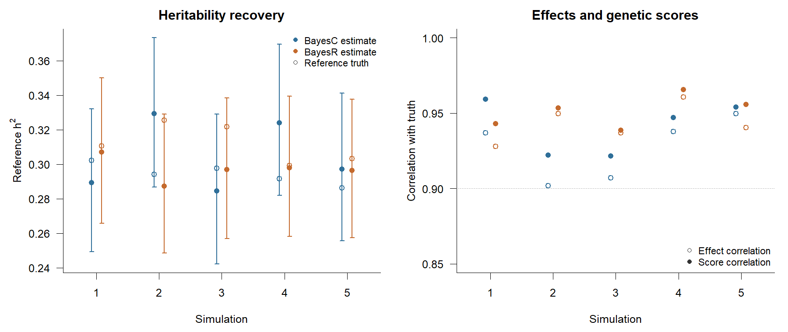

Connected genomic workflow: qualification record
This is the maintained qualification record for the connected genomic example. It reports the final evidence used on the website. Development history, failed runs and exploratory diagnostics are deliberately excluded.
Scope
The workflow connects glma, gcorr, gbayes, gscore, gmap and gsea through the gsuite R interfaces. One detailed dataset provides figures and worked results. Ten independently simulated datasets repeat the same fixed design for a small descriptive qualification.
The qualification asks whether the modules can share prepared genomic data, summary statistics and LD resources; whether requested analyses complete; and whether their outputs behave sensibly relative to known simulation truth. A separate five-repetition design qualifies the supported BayesC and BayesR reference-LD recipe. The results are descriptive checks rather than a ranking of competing methods.
Simulation design
- 10,000 unrelated simulated individuals and 50,000 biallelic markers.
- 500 independent 100-marker regions with within-region correlation ranging from 0.2 to 0.8.
- Three continuous traits with target heritabilities 0.30, 0.40 and 0.35.
- Effects enriched in the first 80 regions.
- Region 1 contains a shared causal variant for two traits; region 2 contains distinct causal variants.
- Three disjoint GWAS samples of 3,000 individuals and 1,000 held-out individuals for prediction.
- A pooled LD reference constructed from the 9,000 GWAS individuals. It retains every pair within each simulated region with \(r^2=0\) and no cross-region LD.
Population truth is calculated from the simulated effects and the known population LD, rather than from the observed reference matrix.
Qualification outcome
| Component | Exercised capability | Outcome |
|---|---|---|
| glma | Three 50,000-marker linear GWAS scans | All marker fits completed; 150 selected marker/trait comparisons across the ten repetitions agreed with R OLS within \(10^{-9}\) |
| gcorr | LDSC, GNOVA, SumHer, annotation-aware LDSC, HESS, SUPERGNOVA and LAVA | Point estimates completed; truth comparisons, unavailable uncertainty and out-of-range correlations remain visible |
| gbayes | BayesC and BayesR using sparse reference LD | The supported parameter-learning recipe passed all heritability, effect-recovery, prediction and chain-diagnostic criteria across five simulations |
| gscore | Ridge, BayesC and BayesR scoring | Held-out scoring completed; truth-effect scoring agreed with simulated genetic values within numerical tolerance |
| gmap | Regional multi-effect mapping and ABF colocalisation | The deliberately simple shared and distinct causal signals were recovered in all repetitions |
| gstat and gsea | Gene statistics, ORA, preranked GSEA, competitive regression, bounded MAGMA and Bayesian pathway analysis | All requested gene and pathway statistics completed through the documented saddlepoint gene-tail route |
All ten planned repetitions completed. Seeds were fixed in advance and no failed simulation was replaced. Native operation-local thread counts were one.
Bayesian linear-regression qualification
Supported reference-LD recipe
Use the scalar BayesC and BayesR reference-LD workflow as follows:
- Standardize the continuous phenotype and dosage scale, align summary statistics to the LD reference, and retain the allele labels.
- Use a matched reference population. The qualification uses 3,000 GWAS individuals and an independent reference of 9,000 individuals.
- Construct sparse LD with a 1,000-marker window and \(r^2=0.001\).
- Use
residual_policy = "reference_ld"andresidual_adjustment = 0.9. - Set priors to the intended architecture. Here the expected nonzero proportion is 0.02. BayesR uses variance multipliers \((0,0.01,0.1,1)\) and active-component proportions \((0.012,0.006,0.002)\). Mixture weights use an explicit Dirichlet strength of 5,000.
- Run four chains. Use 500 burn-in sweeps, followed by 700 retained sweeps for BayesC or 5,000 for BayesR. Require maximum R-hat at most 1.05 and minimum bulk ESS at least 100 for the reported scalar parameters.
The sampler learns residual variance, marker-effect variance and mixture probabilities. It returns posterior marker effects, PIPs, parameter traces and joint-draw reference heritability. Posterior-mean effects can be passed to gscore() without changing marker order or allele orientation.
Qualification design and outcome
Five fixed simulations use 3,000 study individuals, 2,000 markers, 40 causal markers and target heritability 0.30. BayesC is evaluated under a homogeneous normal-effect architecture. BayesR is evaluated under its matching three-component variance mixture. Each simulation receives a separately generated reference panel from the same genotype population. No failed draw was replaced.
| Result across five simulations | BayesC | BayesR |
|---|---|---|
| Mean reference truth | 0.294 | 0.312 |
| Mean posterior heritability | 0.305 | 0.297 |
| Heritability bias | +0.011 | -0.015 |
| Heritability RMSE | 0.023 | 0.021 |
| Conditional intervals containing truth | 5/5 | 5/5 |
| Mean marker-effect correlation with truth | 0.927 | 0.943 |
| Mean genetic-score correlation with truth | 0.941 | 0.951 |
| Mean prediction calibration slope | 0.950 | 0.992 |
| Maximum R-hat | 1.004 | 1.005 |
| Minimum bulk ESS | 1,240 | 1,182 |
The predeclared criteria required absolute heritability bias at most 0.05, RMSE at most 0.075, at least four of five intervals containing truth, mean effect correlation at least 0.80, mean score correlation at least 0.90, maximum R-hat at most 1.05 and minimum bulk ESS at least 100. Both methods passed every criterion.

Download the method summary or the five-repetition results.
Small fixed-seed native checks also show that the BayesC and BayesR transitions agree with the corresponding installed sblr calculations to numerical precision. With complete same-sample LD, posterior mean effects correlate 0.9975 for BayesC and 0.9994 for BayesR with individual-level sblr effects. These checks connect the supported R workflow to its native implementation.
Other numerical findings
Across the ten repetitions:
- Mean trait heritabilities were 0.300, 0.398 and 0.349.
- Annotation-aware LDSC means were 0.310, 0.439 and 0.394. Baseline LDSC, GNOVA and SumHer generally underestimated heritability in this deliberately nonuniform architecture.
- All 40 component credible sets contained the simulated causal marker in the two simple mapping regions.
- HESS supplied standard errors for 189 of 600 regional covariance estimates; SUPERGNOVA supplied 600 of 600; the exercised LAVA route supplies none.
- Six annotation-category genetic correlations were undefined because an estimated component heritability was nonpositive.
- The documented saddlepoint gene-tail route returned all 30,000 requested p-values; 11 calculations used the recorded moment-matching fallback.
Unavailable values and out-of-range genetic correlations are retained in the public tables. They are not clipped, silently replaced or removed.
Qualification limits
This evidence covers one continuous-trait simulation design with a predefined LD structure, architecture and sample split. Ten repetitions provide a useful descriptive check, but not precise power, false-positive, coverage or method ranking statements.
The connected qualification does not cover binary traits, population structure, multi-ancestry analysis, realistic LD-reference mismatch, alternative LD windows or \(r^2\) thresholds, MR/SEM/GGM, Bayesian annotation learning, multivariate Bayesian fitting, LOCO association, every interface option, or complete package/platform qualification. Literature attribution and pedigree/greml/gsolve qualification are maintained separately.
Reproduction and results
The maintained example is simulated_genomics_workflow.R. Its outputs are written under build/examples/simulated-genomics/. The public workflow presents the figures and principal results without executing analyses during website rendering.
The ten simulations are produced by simulated_genomics_replicates.R and summarized by report_simulated_genomics_replicates.R. The public workflow links the maintained aggregate truth comparisons and availability summaries used in its figures.
The supported BayesC/BayesR reference-LD result is reproduced by qualify_gbayes_reference_ld.R. Raw fits and prepared LD resources remain under build/qualification/gbayes-reference-ld/; only the compact result tables and figure are published.
The complete package check was not part of this workflow qualification.